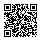

Comida gratis
Free food
en el Valle de Coachella · in the Coachella Valley

Escanee con la cámara de su teléfono para ver despensas de comida, mercados móviles y comidas calientes, y qué lugares abren hoy.
Scan with your phone camera to see food pantries, mobile markets and hot meals, and which places are open today.
¿No tiene internet? Llame a FIND Food Bank · No internet? Call FIND Food Bank
(760) 775-3663
Teléfono: de lunes a viernes, de 8 AM a 4:30 PM.Phone: Monday to Friday, 8 AM to 4:30 PM.
Este sitio es gratis y no recoge ninguna información personal. This site is free and does not collect any personal information.
Proyecto estudiantil para el Sello Estatal de Compromiso Cívico de California. No lo administra FIND Food Bank. A student project for the California State Seal of Civic Engagement. Not run by FIND Food Bank.